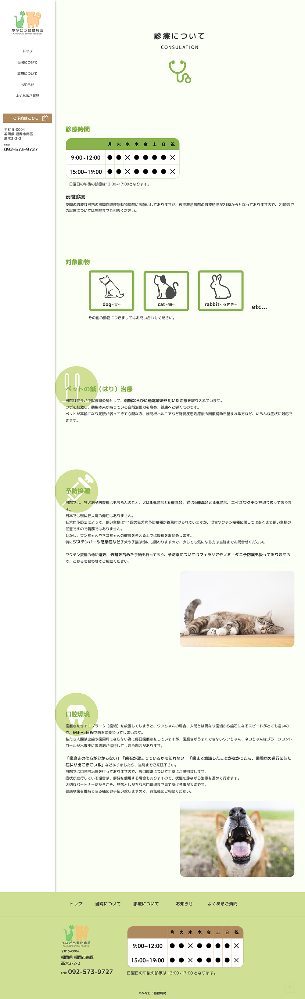
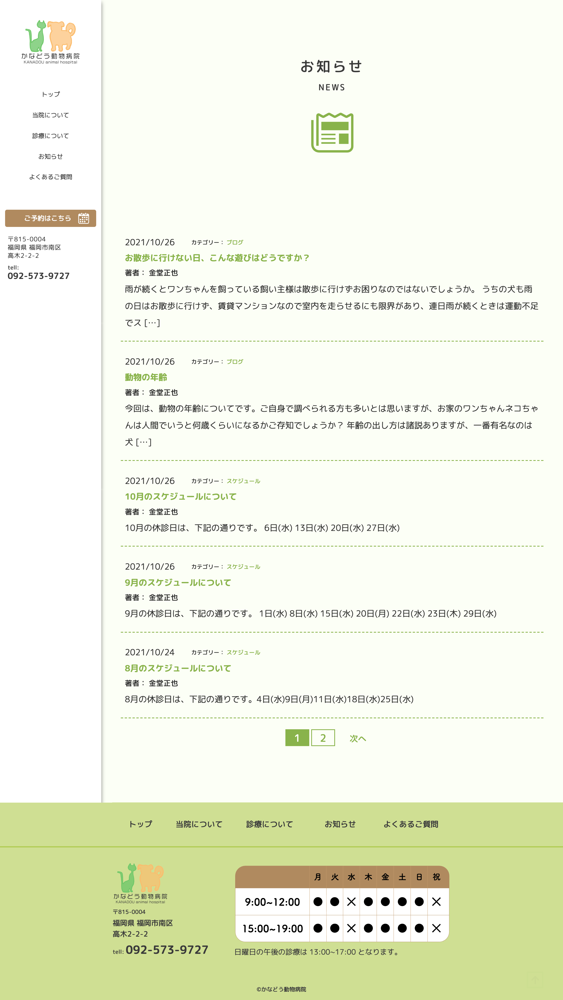
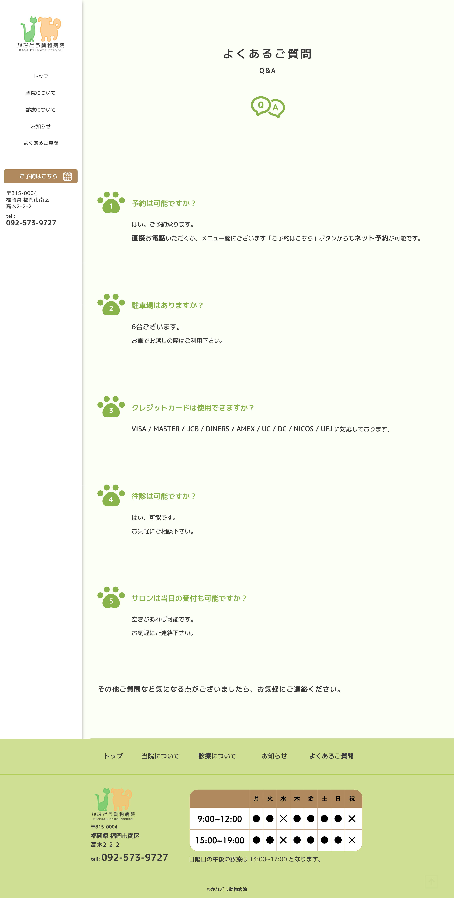
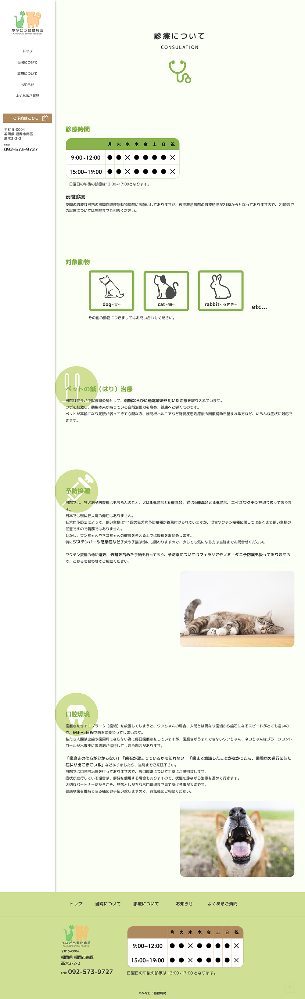
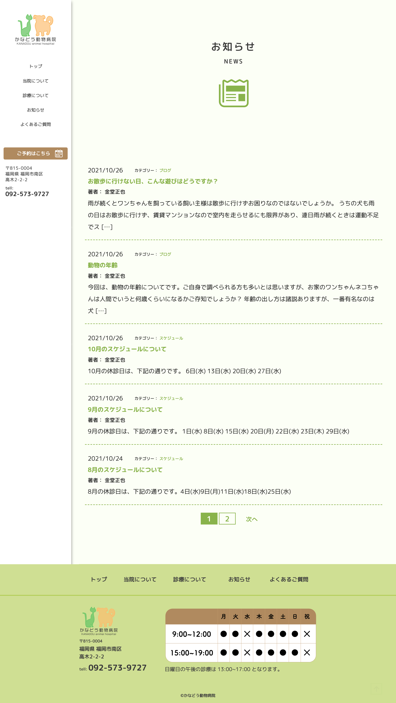
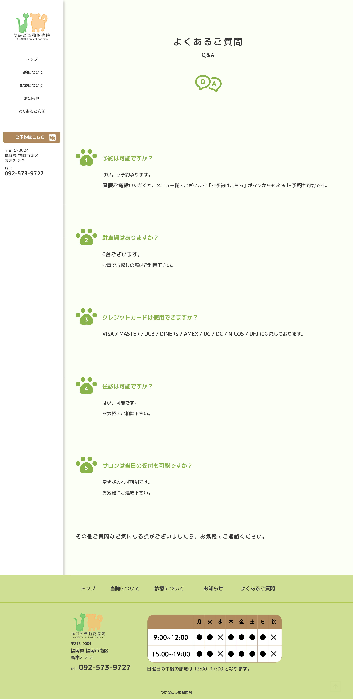

※想像リニューアルのため、BASIC認証をかけています。
ID: kanadou
PW: petclinic-graduate
WEBデザイナー養成スクール「デジタルハリウッドSTUDIO」での卒業制作です。

※想像リニューアルのため、BASIC認証をかけています。
ID: kanadou
PW: petclinic-graduate
WEBデザイナー養成スクール「デジタルハリウッドSTUDIO」での卒業制作です。
デザイン：３週間
コーディング：１ヶ月
最近引っ越してきた、ペットと暮らしている家族
出先でペットが怪我/病気をしてしまい、付近で動物病院を探している飼い主
病院を探している家族に気軽に来院してもらえるよう、グリーンとブラウンで優しい印象になるよう心がけました。
また、サイトを見る人の中にはペットが
怪我をして急いで病院を探している人もいるため、診療時間や夜間診療の時間など知りたい情報があるページにすぐに遷移できるようナビゲーションメニューを
サイドバーに並べました。
 




